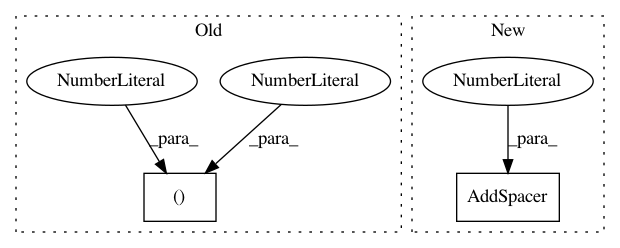

a47cf1097754f7108c7f2b698c34bf3ca311b044,cellprofiler/gui/preferencesview.py,PreferencesView,__make_folder_panel,#PreferencesView#Any#Any#Any#Any#Any#Any#Any#,108
Before Change
new_button.Disable()
sizer.AddMany([(help_button,0,wx.ALL | wx.ALIGN_CENTER, 1),
(text_static,0,wx.ALIGN_CENTER, 1),
(edit_box,3,wx.EXPAND|wx.ALL,1)])
if refresh_action is not None:
refresh_bitmap = wx.ArtProvider.GetBitmap(wx.ART_REDO,
wx.ART_CMN_DIALOG,
After Change
sizer.Add(text_static, 0, wx.ALIGN_CENTER)
edit_box = wx.ComboBox(panel, -1, value, choices=list_fn())
sizer.Add(edit_box, 1, wx.ALIGN_CENTER)
sizer.AddSpacer(2)
browse_bmp = wx.ArtProvider.GetBitmap(wx.ART_FOLDER_OPEN,
wx.ART_CMN_DIALOG,
(16,16))
browse_button = wx.BitmapButton(panel,-1,bitmap = browse_bmp)
In pattern: SUPERPATTERN
Frequency: 3
Non-data size: 2
Instances
Project Name: CellProfiler/CellProfiler
Commit Name: a47cf1097754f7108c7f2b698c34bf3ca311b044
Time: 2013-04-26
Author: leek@broadinstitute.org
File Name: cellprofiler/gui/preferencesview.py
Class Name: PreferencesView
Method Name: __make_folder_panel
Project Name: CellProfiler/CellProfiler
Commit Name: 2e7b099bdd2478a28bf8a65d90912659340f4fbf
Time: 2013-02-04
Author: leek@broadinstitute.org
File Name: cellprofiler/gui/preferencesview.py
Class Name: PreferencesView
Method Name: __init__
Project Name: CellProfiler/CellProfiler
Commit Name: a47cf1097754f7108c7f2b698c34bf3ca311b044
Time: 2013-04-26
Author: leek@broadinstitute.org
File Name: cellprofiler/gui/preferencesview.py
Class Name: PreferencesView
Method Name: __make_odds_and_ends_panel